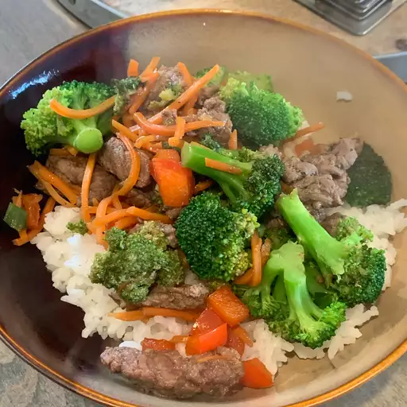

Beef Stir Fry

Finished product fetauring beef-stir-fry
This recipe shows a quick and simple way to uses up some beef and vegtables.
Ingredients
- 2 tablespoons vegitable oil
- 1 pund beef sirlion, cut into 2 inch strips
- 1 1/2 cups fresh broccoli florets
- 1 red bell pepper, cut into matchsticks
- 2 carrots, thinly sliced
- 1 green onion, chopped
- 1 teaspoon minced garlic
- 2 tablespoons soy sauce
- 2 tablespoons sesame seeds, toasted
Directions
- Heat vegitable oil in a large wok or skillet over
medium high heat. Cook and stir beef until browned, roughly 3 to 4 minutes
- Move beef to the side of the wok and add broccoli, bell
pepper, carrots, green onion, and garlic to the center of the
wok. Cook and stir vegetables for 2 minutes
- Stir beef into vegetables and season with soy sauce and
sesame seeds. Continue to cook and stir until vegetables are tender
about 2 more minutes.